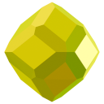

 Syndat.org
Materials
Synthesis
Search
About
mindat.org
gemdat.org
Synthesis and Production
Methods, Processes, and Techniques
Generated with Synthesis Data Revision - 0.1.0
Czochralski Method
Involves pulling a crystal (boule) upward from a molten solution. Produces some of the purest crystals but requires a cleanroom environment.
Verneuil Method
Involves sputtering molten material onto a boule similarly to plasma coating. Produces gem-grade quickly and cheaply, but often with defects.
Hydrothermal Method
Involves suspending a seed crystal into a high pressure / high temperature autoclave with liquid ingredients. Sometimes produces optics-grade ingots.
Flux Method
Involves suspending a seed crystal near or inside flux with ingredients. Allows lower-temperature production. Sometimes produces gem-grade crystals.
Kyropoulos Method
Derivative of the Czochralski method. Involves a similar setup but with a spinning basin or seed. Can change the output purity and may be preferred.
Zone Melting
Skull Melting
Unique to Cubic Zirconia. Involves compressing ingredients into a puck, and using Induction Heating to cook the inside of the puck into CZ, structured like a brain in a skull.
Bridgman-Stockbarger Method
Horizontal Direction Solidification Method
High-Pressure High-Temperature Synthesis
Involves supplying extreme pressures / temperatures on ingredients or a seed crystal to produce larger crystals, which can then be used as seeds again or simply used on their own.
Chemical Vapor Deposition
Involves leeching specialty gasses onto a heated / pressurized environment with seed crystals. Slowly builds up atomic layers of material until a solid crystal is produced.
Sintering and Annealing
An umbrella of methods involving heat treatment or controlled heating / burning to form solids and crystals. Often used for making polycrystalline media or annealing monocrystalline media.
 mindat.org
mindat.org gemdat.org
gemdat.org